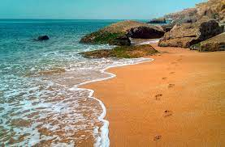

| pakistan tourism website |

ABOUT THE BEST BEACHES IN PAKISTAN

BEACHES
Pakistan, officially the Islamic Republic of Pakistan, is a country in South Asia. It is the world's fifth-most populous country, with a population of almost 242 million, and has the world's second-largest Muslim population. Pakistan is the 33rd-largest country by area, spanning 881,913 square kilometres. Wikipedia
Prime minister: Shehbaz Sharif Trending
Capital: Islamabad
Currency: Pakistani rupee
President: Arif Alvi
Population: 22.09 crores (2020) World Bank
Plan a trip
Things to do
6 h 40 min flight
Points of interest
View 20+ more
Badshahi Mosque
Badshahi Mosque
Lahore Fort
Lahore Fort
Shah Faisal Masjid
Shah Faisal Masjid
Mohenjo-daro
Mohenjo‑daro
Colleges and Universities
View 45+ more
Allama Iqbal Open University, Islamabad Pakistan (Islamabad)
Allama Iqbal Open Un...
Islamabad
University of the Punjab (Lahore)
University of the Punjab
Lahore
University of Karachi (Karachi)
University of Karachi
Karachi
LUMS - Lahore University of Management Sciences (Lahore)
LUMS ‑ Lahore Universit...
Lahore
Feedback
List of beaches in Pakistan - Wikipediahttps://en.wikipedia.org › wiki › List_of_beaches_in_Pa...
Astola. Astola Islands ; Gaddani. Gaddani Beach ; Gwadar. Gwadar Beach · Gwadar Bay ; Jiwani. Jiwani Bay ; Ormara. Ormara Beach · Ormara Turtle Beaches · Kund Malir.
best beaches in pakistan information from en.wikipedia.org
10 of the best beaches in Pakistan, News - AsiaOnehttps://www.asiaone.com › 10-best-beaches-pakistan
12-Jan-2016 — 1. French Beach - Karachi · 2. Astola Beach - Balochistan · 3. Ormara Beach - Balochistan · 4. West Bay Beach (Paddi Zirr) - Balochistan · 5.
best beaches in pakistan information from www.asiaone.com
13 gorgeous beaches in Pakistan that should be on your ...https://blog.siasat.pk › News › Latest
12-Oct-2021 — 1. Nathia Gali Beach – Karachi · 2. Cape Mountain – Karachi · 3. Charna Island – Karachi · 4. Tushan Beach – Karachi · 5. Pasni Beach – Balochistan.
best beaches in pakistan information from blog.siasat.pk
Visiting The Best Beaches In Pakistan | Zameen Bloghttps://www.zameen.com › blog › best-beaches-pakistan
Best Beaches In Pakistan · French Beach Karachi · Kund Malir Balochistan · Astola Beach Balochistan · Sandspit Beach Karachi · Gadani Beach Balochistan · Pasni Beach.
best beaches in pakistan information from www.zameen.com
How good are beaches in Pakistan? - Quorahttps://www.quora.com › How-good-are-beaches-in-Pakis...
Lahore
University of Karachi (Karachi)
University of Karachi
Karachi
LUMS - Lahore University of Management Sciences (Lahore)
LUMS ‑ Lahore Universit...
Lahore
Feedback